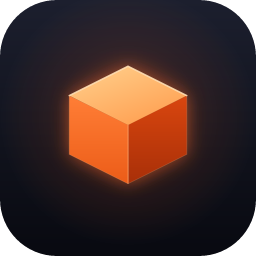
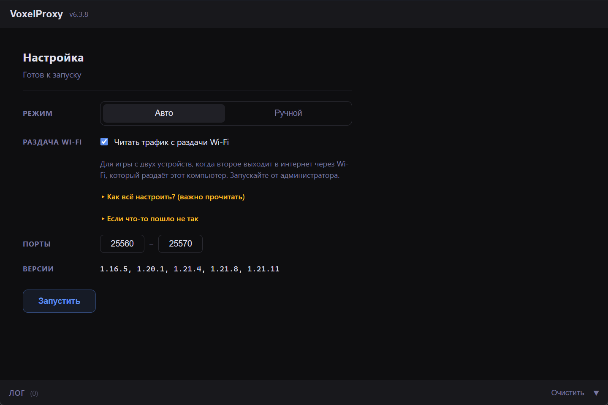

Два клиента под одним ником на одном сервере

VoxelProxy — это локальный прокси для Minecraft. Он позволяет держать одно подключение к серверу под одним ником, но управлять им сразу с двух игровых сессий. Оба клиента подключаются не напрямую к серверу, а к прокси на вашем компьютере, и тот держит единое соединение с сервером. Для самого сервера это выглядит как один обычный игрок — он не видит, что за ником стоят два клиента.
Активной в каждый момент остаётся одна сессия — та, что управляет персонажем. Вторая ждёт наготове. Переключение между ними происходит без выхода с сервера: персонаж не выпадает из игры, не телепортируется в спавн и не теряет очередь.
Заходите на сервер с основного ПК, а в нужный момент перехватываете того же персонажа со второго — ноутбука, рабочего компьютера или устройства в той же сети. Аккаунт при этом остаётся онлайн.
Держите чистый клиент на втором компьютере отдельно от основного. Когда зовут на проверку, переключаетесь на чистую сессию и показываете её — персонаж при этом не выходит с сервера.
Весь трафик идёт через прокси на вашем компьютере, без сторонних серверов и посредников. Поддерживаются как лицензионные, так и пиратские серверы.
VoxelProxy_x.x.x_x64_ru-RU.msi из Releases.